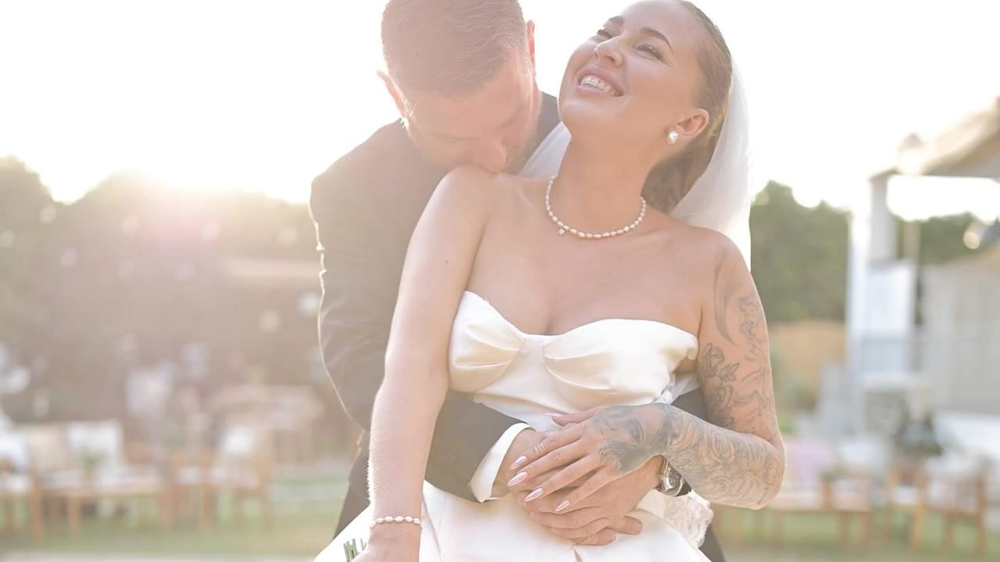
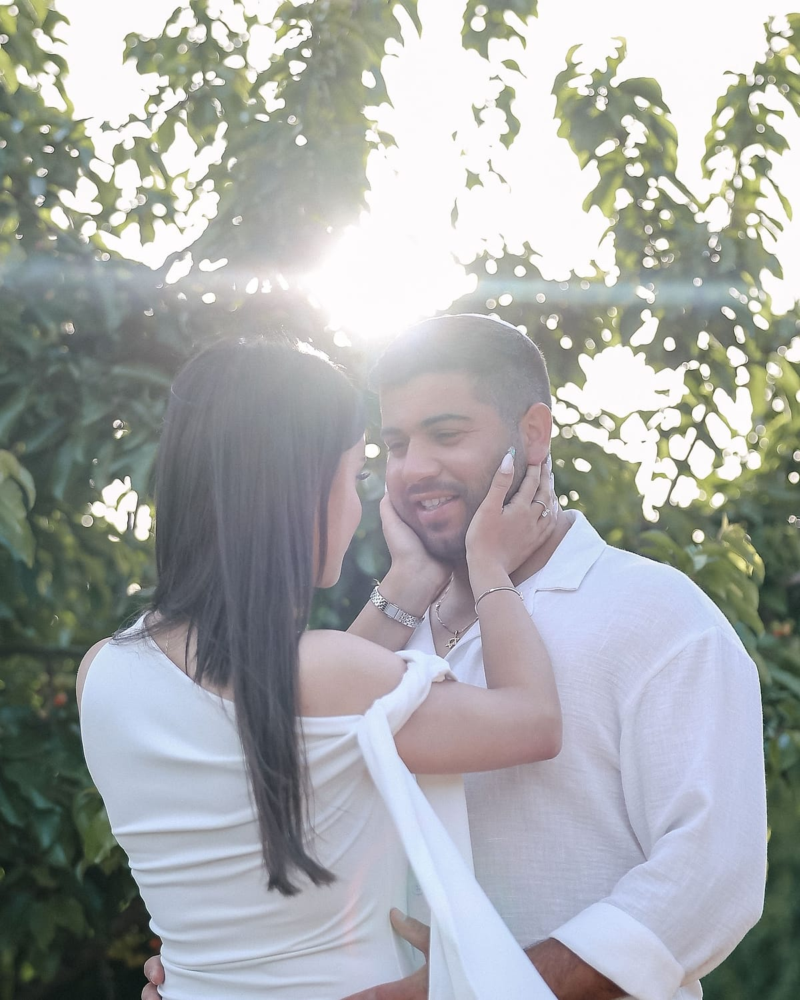
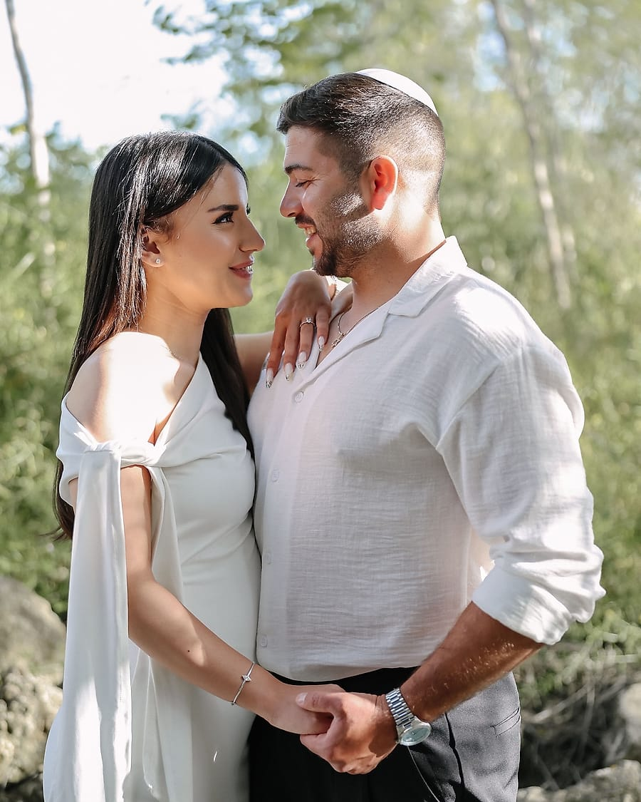
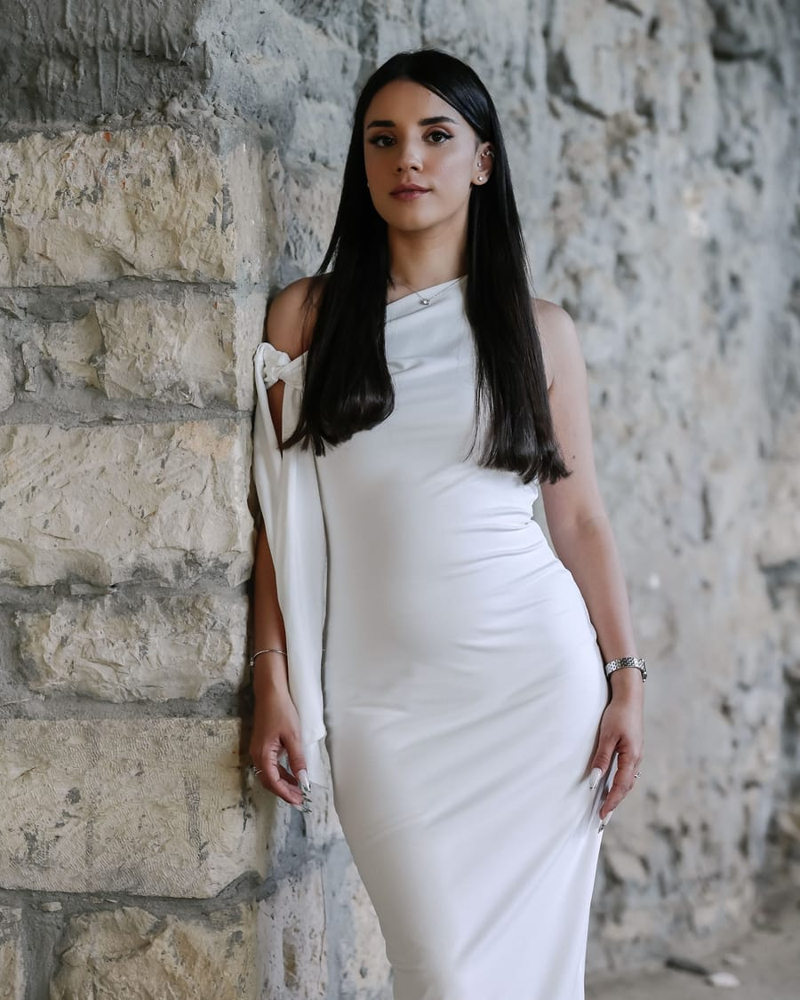
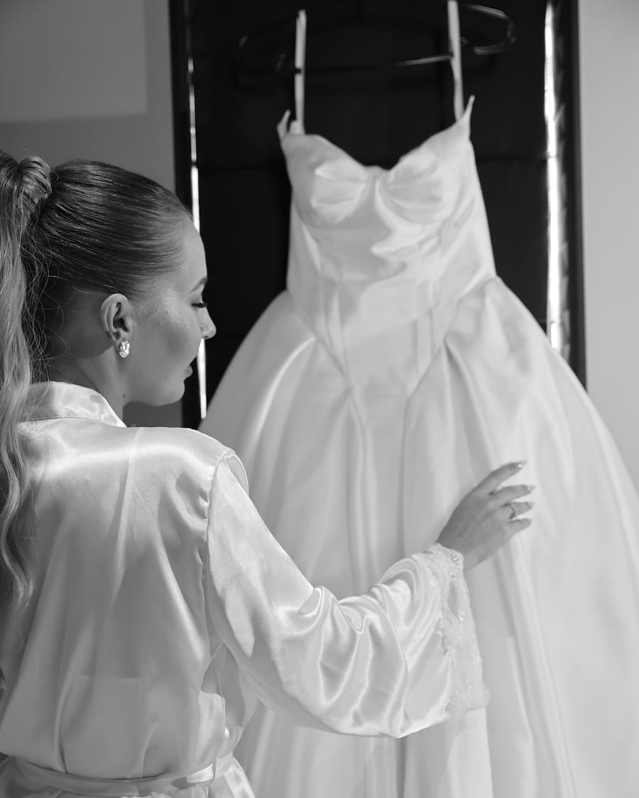
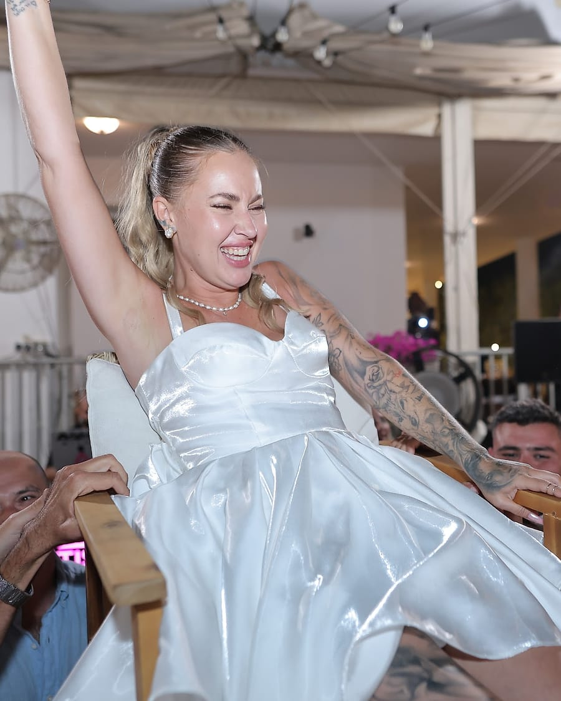
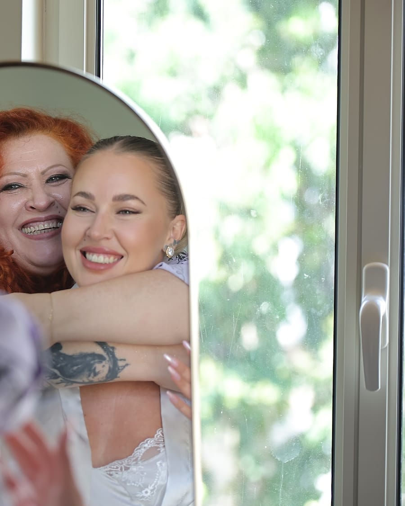

Wedding Films & Photography
הרגעים שלכם. לנצח.
צילום וידאו וסטילס לחתונות ואירועים — Amora Studio, תל אביב

01 — Behind the lens
מאחורי העדשה
אנחנו לא באים לביים לכם את החתונה. אנחנו באים להיות שם — כדי שבעוד עשרים שנה תוכלו להרגיש שוב בדיוק את מה שהרגשתם.
אנחנו מצלמים ביחד, סטילס ווידאו, מהבוקר של ההכנות ועד השיר האחרון. בלי הפרעות, בלי "תעמדו רגע ככה" — רק העין שיודעת מתי להיות קרובה ומתי לתת מרחב.
אנחנו מתל אביב, ומגיעים לכל הארץ.
לצפייה בעבודות שלנו ←02 — What we shoot
מה אנחנו מצלמים
חמישה סוגי צילום, אותה עין. אפשר לשלב הכול לחבילה אחת.





03 — The gallery
רגעים מהעבודות שלנו
04 — The film
חתונה אחת, סרט אחד
הסרט שאנחנו הכי אוהבים להראות. שווה אוזניות.
05 — The tool
מה מצלם אתכם
גוף פול־פריים, עדשות פריים מהירות, ותאורה שמכבדת את האור שיש בחדר. בלי פלאשים שמסמאים את האורחים.
סובבו את הדגם — זה הכלי שמלווה אותנו מהבוקר של ההכנות ועד השיר האחרון.
המצלמה שלנו בתלת־ממד — לתצוגה מלאה ←06 — How it works
איך זה עובד
01
שיחת היכרות
20 דקות בטלפון או קפה. מבינים מה חשוב לכם ומה הלוק שאתם מחפשים.
02
תכנון האירוע
לוח זמנים, לוקיישנים, רגעים שאסור לפספס. עוברים על הכול מראש.
03
יום הצילומים
אנחנו שם מההכנות ועד הסוף. אתם לא צריכים לחשוב עלינו אפילו לרגע.
04
האלבום והסרט
תוך 30 יום: הגלריה המלאה והסרט. האלבום המודפס — שבועיים אחרי שאתם מאשרים את הבחירה. אצלכם, לתמיד.
מה נשאר לכם ביד
- גלריית תמונות ראשונה תוך 7 ימים
- הגלריה המלאה, לצפייה ולשיתוף תוך 30 יום
- סרט חתונה של 3–5 דקות וטיזר קצר לאינסטגרם תוך 30 יום
- מגנטים עם סורק AR שהופך כל תמונה לסרטון בחתונה מלאה
- אלבום מודפס (תוספת) שבועיים אחרי שאתם מאשרים את הבחירה
מגנטים וידאו — ואיך הם מתעוררים לחיים
נראה כמו מגנט רגיל, עד שמכוונים אליו טלפון — ואז התמונה מתחילה לזוז. את זה מייצר Regaflash, העסק האח שלנו, והוא נכלל בכל עסקה ולא כתוספת בתשלום.
01
מצלמים
אנחנו תופסים אתכם ואת האורחים ברגעים הכי יפים של הערב — אותו תיעוד, אותה עין.
02
מטמיעים
בכל מגנט מוטמע קטע הווידאו של אותו רגע בדיוק, ומודפס עוד באותו ערב.
03
סורקים
האורח מכוון את הטלפון אל המגנט שקיבל, והתמונה שבידו מתעוררת לחיים.
07 — Our couples say
מה אומרים עלינו
08 — Good to know
שאלות שנשאלנו כבר
כמה זמן עד שנקבל את החומרים?
גלריית תמונות ראשונה תוך 7 ימים, הגלריה המלאה והסרט תוך 30 יום מהאירוע. אלבום מודפס עוד שבועיים אחרי שאתם מאשרים את הבחירה.
אתם מגיעים לכל הארץ?
כן. Amora Studio מבוססים בתל אביב, ומצלמים מהגליל ועד אילת — בלי תוספת נסיעות באזור המרכז.
יש צלם שני?
בחתונה מלאה יש תמיד שלושה צלמים. שניים על הסטילס ואחד על הווידאו, ובחופה ובריקודים כולם על הזוג משלוש זוויות.
מה כוללת חבילת החתונה המלאה?
כיסוי מלא של היום, סטילס ווידאו, עריכת צבע לכל תמונה נבחרת, גלריה דיגיטלית לשיתוף, סרט חתונה של 3–5 דקות, טיזר קצר לאינסטגרם ומגנטים עם סורק AR שהופך כל תמונה לסרטון. אלבום מודפס וצילומי Save the Date אפשר להוסיף.
מה המחיר?
כל חתונה נבנית אחרת — מספר שעות, מספר צלמים, לוקיישנים. השאירו פרטים ונשמח לשלוח הצעה מותאמת עוד באותו יום.
אפשר לראות אלבום שלם של חתונה?
בשמחה. בשיחה נשלח לכם 2–3 גלריות מלאות של חתונות דומות לשלכם, מהבוקר ועד הסוף — לא רק את הפריים המושלם.
ומה אם התאריך זז?
התאריך עובר איתכם ללא עלות, בכפוף לזמינות. אם אנחנו תפוסים בתאריך החדש — נחזיר את המקדמה במלואה.
האולם שלנו חשוך — איך זה מצטלם?
אנחנו מצלמים על גוף פול־פריים ועדשות פריים מהירות, כאלה שאוספות הרבה אור, ומשלימים בתאורה שמכבדת את האור שכבר יש בחדר. בלי פלאשים שמסמאים את האורחים.
מה קורה אחרי שמשאירים פרטים?
חוזרים אליכם עוד באותו יום עם זמינות והצעה מותאמת. אחר כך שיחת היכרות של 20 דקות, בטלפון או על קפה, ובה נשלח לכם 2–3 גלריות מלאות של חתונות דומות לשלכם.
אתם מצלמים גם וידאו, או שצריך צלם וידאו בנפרד?
הכול אצלנו, תחת קורת גג אחת. מצלמים ביחד — שניים על הסטילס ואחד על הווידאו, ובחופה ובריקודים כולם על הזוג משלוש זוויות. בסוף מקבלים גם גלריה מלאה וגם סרט חתונה של 3–5 דקות וטיזר קצר לאינסטגרם.

09 — Let's talk
התאריך שלכם עדיין פנוי?
השאירו פרטים ונחזור אליכם היום עם זמינות והצעה מותאמת.